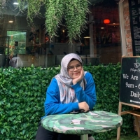

Hello. I'm Hanis Zahira. A fresh graduatewith a major in Computer Science, specializing in Interactive Media. I am passionate about using technology to create captivating user experiences.
Throughout my studies, I have developed a solid foundation in computer science principles and a strong eye for design aesthetics. I have experience with programming languages such as Java, PHP, and C++, as well as web development tools like HTML, CSS, and JavaScript.
During my time as a student, I actively sought out real-world projects to apply my knowledge. I collaborated with diverse teams to develop interactive media applications, including mobile apps and web platforms. These experiences have sharpened my skills in analyzing user requirements, designing intuitive interfaces, and implementing efficient solutions.
I considers myself as a ‘forever student,’ willingness to learn and eager to both build on my academic foundations. My hunger for knowledge and determination to turn information into action has contributed me to get Dean's List for every sem. Not only that, I'm also active in extra-curricular which I'm a Chief of Exco Multimedia in Persada UTeM. I also has been elected as Vice Director for few programs which I'm responsible for overseeing all aspects flow of the program.